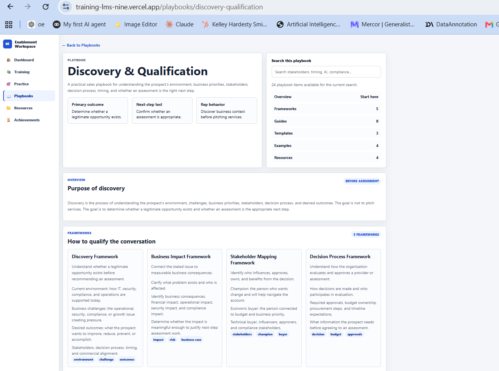

Learning Experience Platform

Challenge
Traditional corporate training can be passive, disconnected from actual work, and difficult to reinforce over time.
Approach
I combined structured learning paths with searchable playbooks, active practice, and visible progress so knowledge could be learned and applied in context.
Solution
- Learning paths, courses, and lessons
- Playbooks, guides, templates, and examples
- Quizzes, flashcards, and roleplay practice
- Progress and knowledge reinforcement
Demonstrated value
The prototype demonstrates a practical connection between formal learning, job support, practice, and ongoing development.